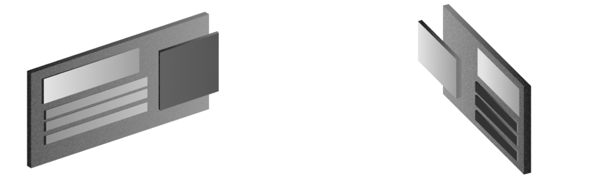

Zasady UX projektowania stron internetowych
UX odgrywa znaczącą rolę w projektowaniu stron internetowych. Zostało udowodnione, że użytkownik spędza w aplikacji webowej bardzo mało czasu na faktycznym czytaniu treści strony. W rzeczywistości ludzie mają tendencję to szybkiego przeglądania zawartości i przeczytania tylko treści, które uznają za warte uwagi. Przy takim sposobie przeglądania stron internetowych użytkownik widzi tylko to co chciał zobaczyć, a jest to tylko ułamek tego co może znaleźć na danej stronie. Dlatego ważne jest, aby tworzyć interaktywne strony i aplikacje webowe, które zachęcą odwiedzającego do dalszego czytania.
-
Makietowanie
Makieta strony jest wstępnym zarysem kluczowych informacji, które powinny znaleźć się na stronie, wraz z hierarchią elementów oraz rozplanowaniem pustych przestrzeni. Makietowanie pozwala skoncentrować się na budowaniu odpowieniej hierarchi wizualnej i układu, co ma duży wpływ na odbiór strony przez użytkownika.
-
Responsywność
Jest to dostosowywanie wyświetlanej zawartości do każdego wymiaru i rozdzielczości strony, w tym zmniejszanie rozmiaru plików obrazów oraz upraszczanie skomplikowanych elementów dla urządzeń mobilnych. Jej zapewnienie gwarantuje pozytywne wrażenia na wszystkich typach wyświetlaczy.
-
Dostępność informacji
Pojęcie dostępności może być opisane jako możliwość postrzegania, rozumienia, nawigacji i interakcji ze stronami internetowymi przez ludzi z niepełnosprawnościami. Przynosi to również korzyści innym grupom, na przykład osobom starszym, których możliwości zmieniają się ze względu na wiek.
-
Ewaluacja UX
Pomiar wrażeń użytkownika może przyjmować różne formy, od prostego procesu ankietyzacji po analizę map cieplnych strony. Do wizualnych form zaliczamy mapy cieplne, scrollmapy i widok confetti, a do form bazujących na skali i kwestionariuszach SUS(system usability scale), UEQ(user experience questionnaire) oraz QUIS(questionnaire for user interaction satisfaction).
Ważnym krokiem przy tworzeniu strony internetowej jest uprzednie stworzenie makiety (ang. wireframe) i biblioteki komponentów, oraz zaprojektowanie wyglądu strony na wysokim poziomie szczegółowości. Wykonanie tych kroków zagwarantuje, że przez rozpoczęciem implementacji programista przemyśli kwestie projektowe, zastanowi się nad tym jak użytkownik będzie używał strony, oraz które elementy powinny być interaktywne.
